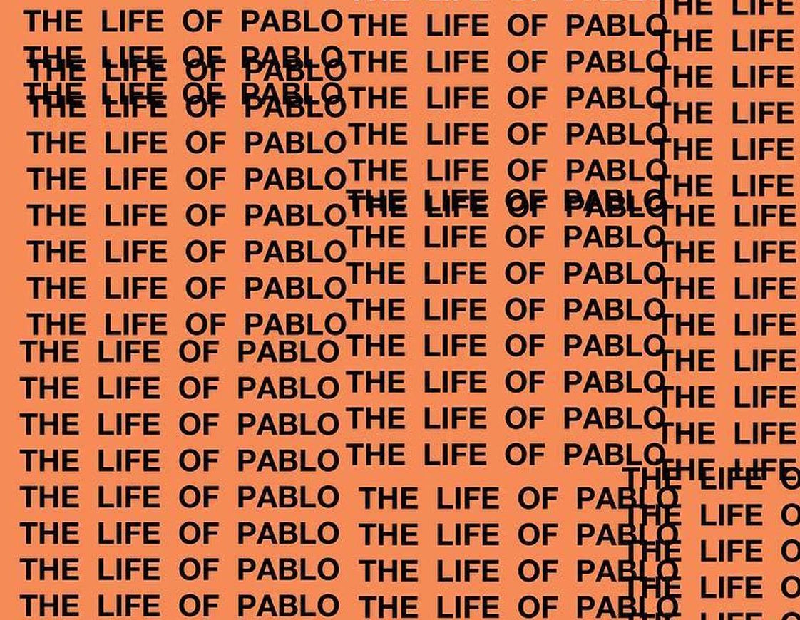

Kanye West has always been an influential figure in rap and hip-hop music. But with the release of "The Life of Pablo" — a digital-only album that made history when it debuted at number one on the charts — he has solidified his presence into the realm of pop culture. "The Life of Pablo" is not only influencing fans, but critics, fashion, and the music industry as a whole.
Locations where TLOP was recorded
Kanye West is notorious for secrecy while recording his albums, meaning he moves from studio to studio. For his latest, he cited 14 different places he in which he recorded in his album notes, from New York to Italy. Here are some of the most notable.
Fan Response
All images are shown with their tags as listed on Instagram